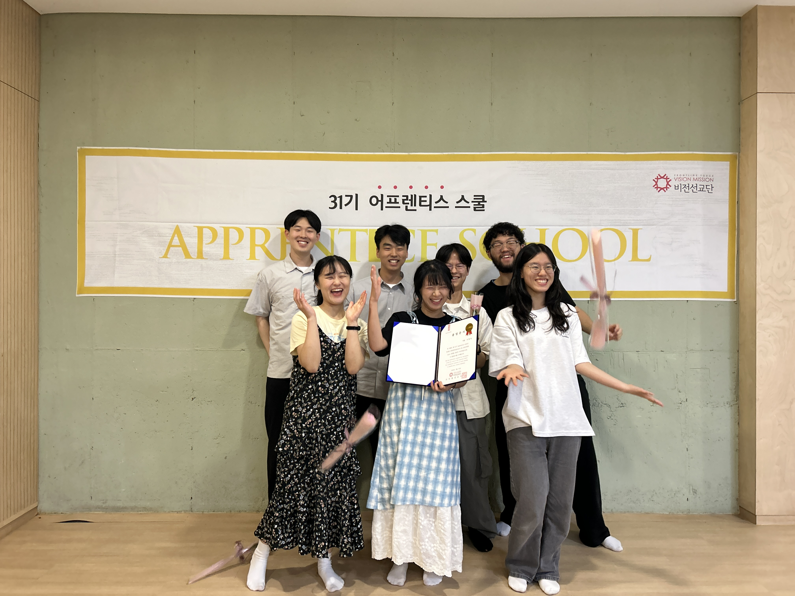
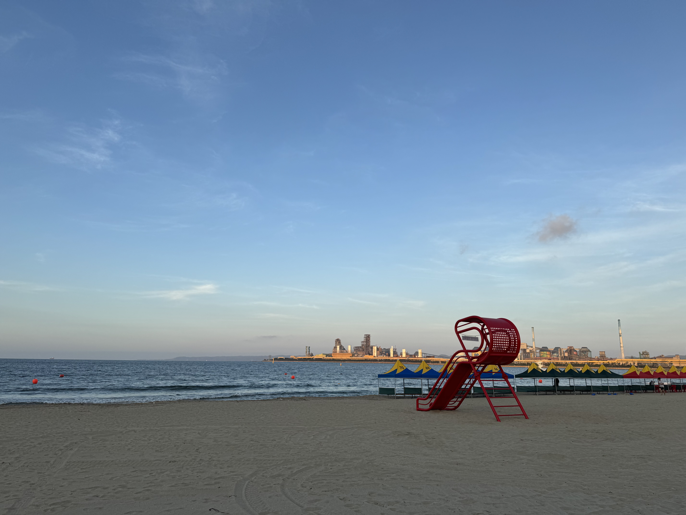
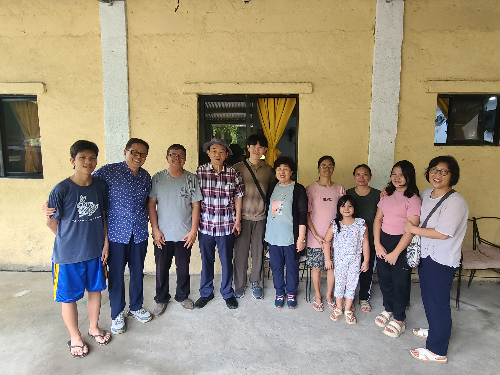

안녕하세요!
오랜만에, 추석을 맞아 편지를 적네요. 한두 달 텀으로 보내고 싶었지만 생각보다 제가 더 게을러서 약 7~8개월 만에 보내는 것 같습니다. 연초에 소식을 나누었는데, 어느덧 연말이 되어가고 있네요. 이번 한 해는 어떻게 보내셨을지 궁금한데, 혹시 괜찮으시면 함께 나누어주셔서 같이 듣고 기도하겠습니다. 😊
저는 3월부터 약 3개월간 서울에서 지내다가 다시 포항 공동체에서 지내고 있습니다. 비전선교단에서 진행하는 선교사 양성 심화훈련(AS훈련)에 섬길 사람이 부족하고, 또한 개별적으로 홈페이지 제작과 관련된 사역 요청이 들어와 본부에서 함께 지내고 왔습니다. 섬기는 역할이지만 저에게도 정말 많은 배움과 도전이 있는 시간이었습니다. 공동체 생활을 오래하며 여러 훈련을 받아왔다고 생각했지만, 여전히 다루어지지 않는 저의 연약함을 주님이 집중적으로 드러내시고 배우게 하시는, 힘들지만 감사한 시간이었습니다.

<팀원들(AS) 졸업식 사진>
짧게만 나누면, 억울한 상황 가운데 어떻게 대응하고 반응해야 할지를 알게 하시는 시간이었습니다. 저는 참 사람들의 인정을 받기 좋아하고, 억울함을 느끼는 걸 힘들어합니다. 나름의 ‘내 옳음’의 기준을 가지고 그것이 벗어나는 상황을 어려워합니다. 그중 하나로, 내가 해야 하는 일이 아님에도 그 일이 내 잘못인 것처럼 되는 상황을 어려워했는데, 신기하게도 그런 상황을 많이 허락하심으로써 내가 왜 그렇게 반응하고 있었는지, 어떻게 해야 하는지를 배우게 하셨습니다.
[마 3:17] 하늘로부터 소리가 있어 말씀하시되 이는 내 사랑하는 아들이요 내 기뻐하는 자라 하시니라
이번 상반기에 위 말씀을 약속의 말씀으로 정했는데, 사실 왜 이런 말씀을 계속해서 생각나게 하시고 저에게 마음으로 묵상하게 하시는지 이해가 되지 않았습니다. 하나님의 자녀로서 주님의 사랑 안에 정체성이 세워져 있다고 생각했기 때문입니다. 그러나 제 마음의 중심이 하나님의 사랑 안에 세워져 있지 않았음을 금방 보게 하셨습니다.
주변 사람들이 보기에도 신기하다고 말할 정도로 억울한 상황들을 반복해서 겪으며, 그 안에서 저는 진실이 무엇인지, 내가 잘못이 없는 이유가 무엇인지를 은연중에 변호하며 반응했습니다. 그러던 중 리더 간사님과 이 억울한 마음의 어려움에 대해서, 어떻게 반응해야 할지 상담하는 시간 가운데 너무나 심플하지만 쉽지 않은 답을 듣게 되었습니다.

<바다 사진, 그냥 보기 좋아서 넣었습니다>
“사역은 원래 억울한 자리에 들어가는 거야. 예수님이 드러나고 생명을 살리기 위해선 그 억울한, 누군가의 잘못과 죄를 대신 감당할 사람이 필요해서 예수님을 닮은 사역자가 세워져야 해. 너가 집중하고 우선해야 하는 것은 그 상황의 옳고 그름을 가리는 게 아니라, 너를 부인하고 예수님을 붙잡는 거야.”
들으며 속으로는 ‘그게 어떻게 가능한 거야? 말이 되는 건가?’ 이런 생각을 했지만, 그럼에도 머리를 작은 망치로 한 대 맞은 것 같았습니다. 나는 옳고 그름을 가리기를 원하는데, 이건 내가 해야 할 게 아니구나. 예수님과 같이 십자가를 지며 누군가의 죄를 감당하는 삶이라는 게 이런 거구나. 억울한 게 너무나 당연한 거구나. 억울함을 어려워하는 것도 하나님이 아닌 사람들에게 잘 보이려는 마음이 내게 크다는 걸 보여주는 거구나. 이런 생각을 하게 되었습니다.
[요 1:29] 이튿날 요한이 예수께서 자기에게 나아오심을 보고 이르되 보라 세상 죄를 지고 가는 하나님의 어린 양이로다
예수님은 죄가 없으심에도 세례를 받고자 나아오실 때, 세례 요한이 위와 같이 선포합니다. 세례는 죄된 육체, 옛사람이 죽고 죄를 씻어 예수님과 연합하는 것을 의미하는데, 아무 죄도 없으신 예수님은 굳이 세례를 받으시며 그분의 사역을 시작하십니다. 그분은 죄가 없으심에도 위 말씀과 같이 세상 죄를 대신하여 감당하시며, 그로 인해 죽고 부활하실 것을 분명히 밝히십니다.
나의 죄 때문이 아닌 사람들의 죄를 위해 죽으실 것을 예표하시며 세례를 받으십니다. 그리고 그때 성령이 비둘기같이 내려오시며 예수님을 향한 아버지 하나님의 사랑과 기쁨을 드러내십니다.
죄를 대신 감당하는, 억울하고 힘든 그 자리 가운데 더욱 강력한 소리와 외침 — “사랑하는 내 아들, 내 기뻐하는 자” — 그 사랑의 선포가 울려 퍼지는 것입니다.
억울하나 구원하기 위해 십자가를 지는 그곳에 더욱 선명하게 말씀하시는 하나님의 사랑을 듣고 그분과 교제하는 삶만이, 그 사랑의 교제를 누리는 삶만이 사람들의 인정과 시선으로부터 자유해져 기꺼이 죽어질 수 있음을 보게 하십니다.
하나님과의 사랑의 교제에 뿌리박히지 않고 사람들에게 나의 기쁨과 만족을 구하고자 하는 마음은 십자가를 대신 지게 할 어떤 능력과 힘도 없음을 알게 하시며, 제가 다시 그 주님의 사랑 안에서만 예수님을 따르는 길을 갈 수 있음을 직면하게 하셨습니다.

<부모님과 짧게 필리핀 선교여행>
이후로도 여전히 저는 억울함이 힘들고 사람들의 인정에서 자유하지 못한 순간들을 많이 마주합니다. 내가 과연 선교사로서 하나님 한 분만으로 만족할 수 있을까 하는 의구심이 들 정도로 연약함에 묻혀 있기도 합니다. 그러나 분명하게 말씀하시고 약속하신 하나님의 사랑의 말씀을 붙잡고, 다시 주님의 임재 안에서 힘을 얻고 나아가려 합니다. 아무 조건 없이 여전히 사랑한다 말씀하시는 그분의 말씀 앞에 다시 내 믿음을 드려, 보이는 상황과 사람들의 반응과 상관없이 주님만을 사랑하고 하나님을 드러내는 삶이 되길 소망합니다.
바쁜 한 해, 다시 주님 앞에 감사를 고백함으로 그분의 사랑의 임재 앞에 나아가는 저와 모두가 되기를 원합니다.
 <훈련 조원(FS) 사진, 캠프장 산책하며>
<훈련 조원(FS) 사진, 캠프장 산책하며>